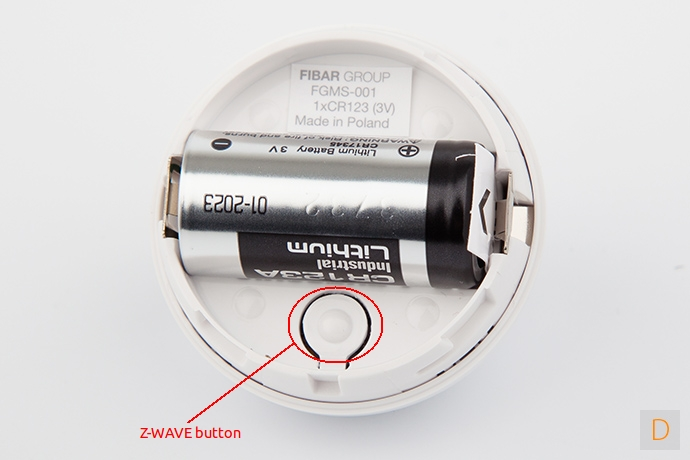

Fibaro Motion Sensor¶

How to add to VENUS app¶

- 1. Activation
- Press “Add button” (button ‘+’) in app
- Insert battery
- Wait for VENUS scan & detect this device and inform in app
- 2. Reset then re-add
- Press “Add button” (button ‘+’) in app
- Quickly tripple press z-wave button once to reset
- Quickly tripple press z-wave button once to add
- Wait for VENUS scan & detect this device and inform in app
How to add/remove associated device(s) to¶
To add associated device(s) to this sensor, below action is required:
- Add z-wave notified-devices (which will be associated to this sensor) to VENUS
- Select Associate button and then select notified-device(s) to add
- Wake-up this sensor: press z-wave button*
- If successful, pop-up notification displays in VENUS app
To remove associated device(s) from this sensor, below action is required:
- Select Associate button and then select notified-device(s) to remove
- Wake-up this sensor: press z-wave button
- If successful, pop-up notification displays in VENUS app
Configuration description¶
Motion sensor’s sensity
- The lower the value, the more sensitive the PIR sensor.
- Available: 8 ~ 255
- Default: 10
- Parameter 1, 1byte size
Motion sensor blind time
- Period of time that sensor is blind. After this time, sensor will be able to detect motion again.
- Available: 0 ~ 15
- Formula: time = (setting value + 1)/2 seconds
- Default: 15 (8 seconds)
- Parameter 2, 1 byte size
PIR sensor “PULL COUNTER”
- The number of moves required in-order to sensor report the motion. The lowest value, the less sensitive. This setting is not recommented.
- Available: 0 ~ 3
- Formula: Pulls = setting value + 1
- Default: 1
- Parameter 3, 1 byte size
PIR sensor’s “WINDOW TIME”
- Period of time to detect number of moves (in parameter 3 setting). The higher value, the more sensitive. This setting is not recommented.
- Available: 0 ~ 3
- Formula: times = 4 * (setting value + 1)
- Default: 2 (12 seconds)
- Parameter 4, 1 byte size
Motion alarm cancellation delay
- Motion alarm will be cancelled in controller and associated devices after this setting period of time. Any motion in process of cancellation is the cause of restarting countdown.
- Available: 1 ~ 65535
- Default: 30 seconds
- Paramter 6, 2 bytes size
PIR sensor operating mode
- This setting determines the time that motion sensor actived. Note, tamper, light intensity, temperature will be still actived regardless this setting.
- 0: Motion sensor is always active
- 1: Motion sensor is active during the day only
- 2: Motion sensor is active during the night only
- Default: 0
- Parameter 8, 1 byte size
Night or Day.
- This setting defines night and day basing on light intensity.
- Available: 1 ~ 65535
- Default: 200 lux
- Paramter 9, 2 bytes size
Trigger to associated devices
- This setting defines trigger behaviour to associated devices in case of motion detected.
- Available:
- 0: Basic ON and basic OFF are sent
- 1: Only basic ON is sent
- 2: Only basic OFF is sent
Default: 0
Parameter 12, 1 byte size
Trigger ON command format
- This setting defines behaviours trigger to associated devices when motion detected
- Available:
0: Turn off associated devices
- 1 ~ 99: Turn on associated devices (Binary devices)
Turn on associated devices with dimmer value
- 255: Turn on associated devices (Binary devices)
Turn on associated devices with last memorized dimmer value
Default: 255
Parameter 14, 1 byte size
Trigger OFF command format
- This setting defines behaviours trigger to associated devices when motion end
- Available:
0: Turn off associated devices
- 1 ~ 99: Turn on associated devices (Binary devices)
Turn on associated devices with dimmer value
- 255: Turn on associated devices (Binary devices)
Turn on associated devices with last memorized dimmer value
Default: 0
Parameter 16, 1 byte size
Tamper sensity
- The changes of tampering in forced acting on sensor.
- Available: 0 ~ 122
- Formula: setting val * 0,016g, zero means disable this feature.
- Default: 15 (0,224g)
Tamper alarm cancellation delay
- Period of time that tamper alarm will be cancelled
- Available: 1 ~ 65535 seconds
- Default: 30
- Parameter 22, 2 bytes size
Tamper operating modes
- This setting determines the behaviour of tamper and how it reports.
- Available:
- 0: Tamper alarm is reported and cancellation is not reported.
- 1: Tamper alarm and alarm cancellation are reported, alarm cancellation is report after period of time set in Tamper Alarm Cancellation Delay
- 2: Tamper alarm is reported and cancellation is not reported. Sensor’s orientation in space is reported.
- 3: Tamper alarm and alarm cancellation are reported, alarm cancellation is report after period of time set in Tamper Alarm Cancellation Delay. Sensor’s orientation in space is reported.
- 4:
Default: 0
Parameter 24, 1 byte size
Tamper alarm broadcast mode
- This setting determines whether tamper alarm is broadcasted to all node in communication range or not.
- Available:
- 0: Disable broadcast mode
- 1: Enable broadcast mode
Default: 0
Parameter 26, 1 byte size
Illumination report threshold
- This setting determines the change of light intensity level
- Available: 0 ~ 65535
- Default: 200
- Parameter 40, 2 bytes size
Illumination report interval
- Period of time that device sends illumination report.
- Available: 0 ~ 65535 seconds
- Default: 0
- Parameter 42, 2 bytes size
Temperature change report setting
- This setting determines the change in temperature between current and last report to report to controller or not
- Available: 0 ~ 255
- 0: report is not send
- 1 ~ 255: approx. with 0.1 ~ 25.5 celcius
Default: 10 (1 celcius)
Parameter 60, 1 byte size
Temperature measuring interval
- This setting defines time that sensor measures environment temperature.
- Available:
- 0: Temperature is not measured
- 1 ~ 65355: interval time in seconds
Default: 900
Parameter 62, 2 bytes size
Temperature report interval
- This setting defines time that sensor sends temperature report to controller.
- Available:
- 0: Temperature is not sent
- 1 ~ 65535: interval time in seconds
Default: 0
Paramter 64, 2 bytes size
Temperature offset
- This setting defines temperature offset which is added to actual temperature to report to controller for specific purpose.
- Available:
- 0 ~ 100: appropriated to 0oC to 100oC
- 64355 ~ 65535: appropriated -10oC to -0,1oC
Default: 0
Parameter 66, 2 bytes size
LED indicator setting
- This setting defines LED behaviour for each status.
- Available:
- 0: LED inactive.
- 1: LED colour depends on the temperature. Set by #86 and #87.
- 2: Flashlight mode - LED glows in white for 10 seconds.
- 3: White.
- 4: Red.
- 5: Green.
- 6: Blue.
- 7: Yellow.
- 8: Cyan.
- 9: Magenta.
- 10: LED colour depends on the temperature. Set by parameters #86 and #87.
- 11: Flashlight mode - LED glows in white through 10 seconds. Each next detected motion extends the glowing by next 10 seconds.
- 12: White.
- 13: Red.
- 14: Green.
- 15: Blue.
- 16: Yellow.
- 17: Cyan
- 18: Magenta
- 19: LED colour depends on the temperature. Set by parameters #86 and #87.
- 20: White
- 21: Red
- 22: Green
- 23: Blue
- 24: Yellow
- 25: Cyan
- 26: Magenta
- Values from 1 to 9 = single long blink at the moment of reporting motion. No other motion will be indicated until alarm is cancelled.
- Values from 10 to 18 = single long blink at the moment of reporting motion and one short blink each time the motion is detected again.
- Values from 19 to 26 = single long blink at the moment of reporting motion and two short blinks each time the motion is detected again.
Default: 10
Parameter 80, 1 byte size
LED brightness
- This setting defines LED brightness when active.
- Available:
- 0: brightness determines by setting in xxx
- 1 ~ 100: percentage
Default: 50
Parameter 81, 1 byte size
Ambient illumination level below which LED brightness is set to 1% (#82)
- This setting is effectived when LED brightness setting value is 0.
- Available: 0 ~ #83 setting value (#83 value is listed below)
- Default:
- Paramter 82, 2 bytes size
Ambient illumination level below which LED brightness is set to 100% (#83)
- This setting is effectived when LED brightness setting value is 0.
- Available: value in #82 setting ~ 65535
- Default:
- Paramter 83, 2 bytes size
Minimum temperature resulting in BLUE led illumination (#86)
- This setting is effectived when “LED indicator” is configured.
- Available: 0 ~ #87 setting value
- Default: 18 (18oC)
- Parameter 86, 1 byte size
Maximum temperature resulting in RED led illumination (#87)
- This setting is effectived when “LED indicator” is configured.
- Available: setting value in #86 ~ 255
- Default: 28 (28oC)
- Parameter 87, 1 byte size
LED indicating tamper alarm
- This setting indicates mode resembles a police car (white - red - blue)
- Available:
- 0: no indicate when tamper alarm
- 1: LED indicates tampering alarm
Default: 1
Parameter 89, 1 byte size